自己負担0円
保険・ロードサービス特約で、レッカー等が自己負担0円になるため、内容を確認しながらご対応
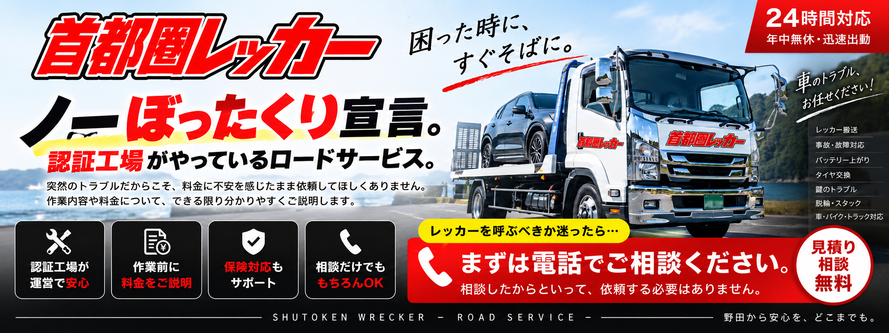

野田つくば小山で車のトラブルなら首都圏レッカー
＼24時間受付・整備士直通／ 070-7615-0960THREE ASSURANCES
お困りごとお聞かせください
保険・ロードサービス特約で、レッカー等が自己負担0円になるため、内容を確認しながらご対応
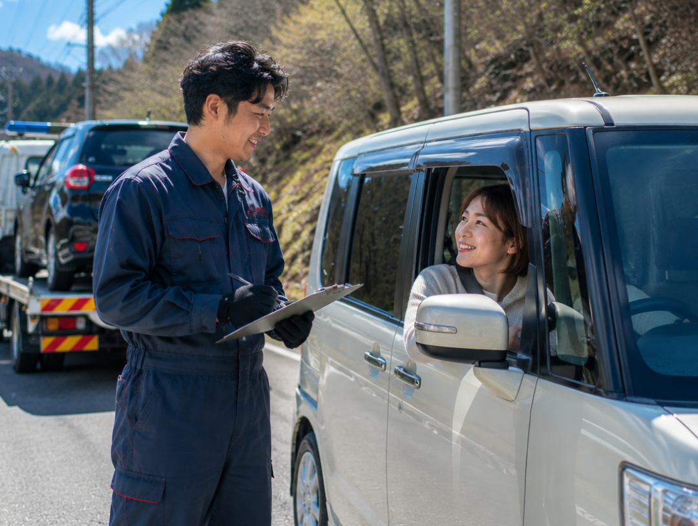
故障で車が使用できなくても安心！レンタカーの貸し出しがあるので、そのままご帰宅いただけます。

国の基準を満たし、地方運輸局長の認証を受けて自動車の「特定整備」ができる工場でご対応
急な車のトラブルでも 安心してお任せいただけます
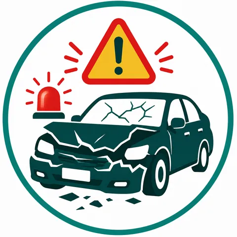
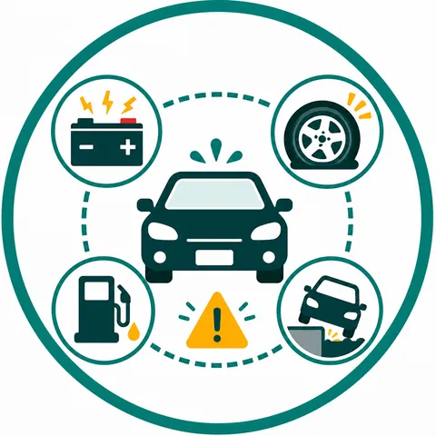
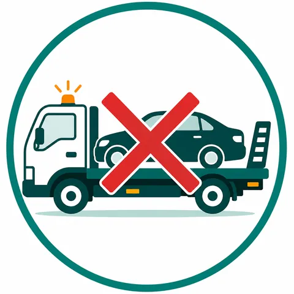
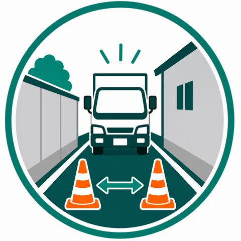
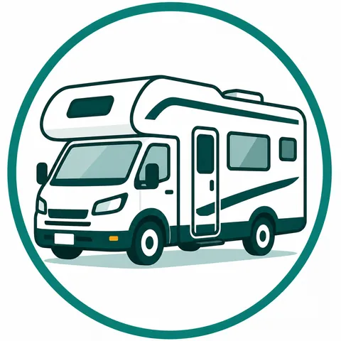
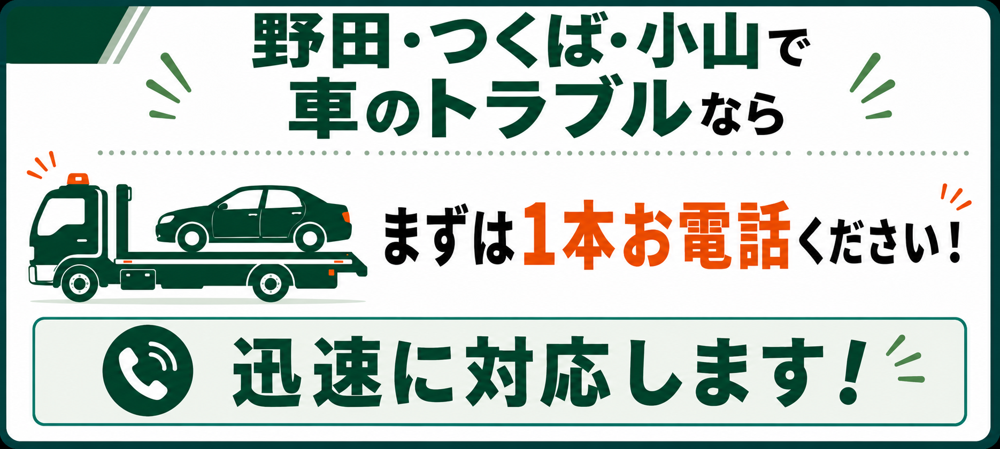
電話対応～レンタカー手配まで同じ窓口で、
安心できるサポートをお約束します。
国家資格を持った整備士
国家資格を持つ整備士が工場に常駐。搬送後の点検や修理のご相談も、同じ窓口で続けてお任せいただけます。
認証工場で対応
国の基準を満たし、地方運輸局長の認証を受けた自動車の「特定整備」ができる工場
狭い道・山間部でも対応
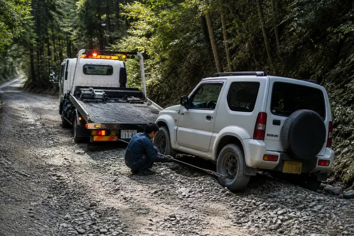
現場の地図と状況を伺い、進入できるルートや車両を事前に判断します。山あいの道はもちろん、砂利道や軟弱地盤でもウィンチ併用など現場に合わせた作業を検討します。
小型救援車
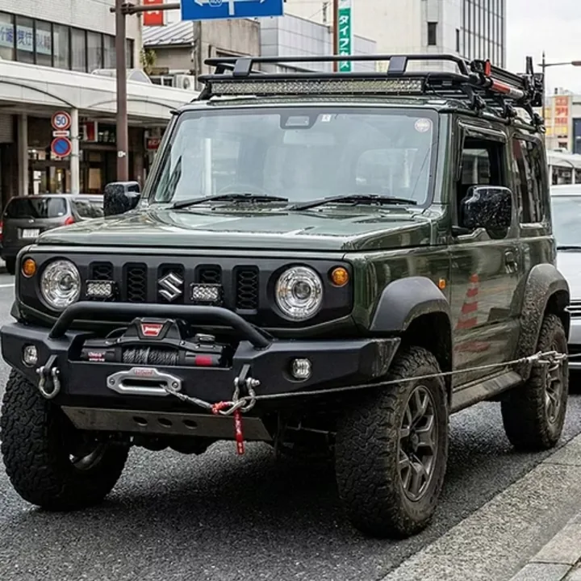
ウィンチ付きの小型車で、大型が入れない狭路・農道・未舗装路の現場にも対応します。
搬送・レンタカー手配をサポート
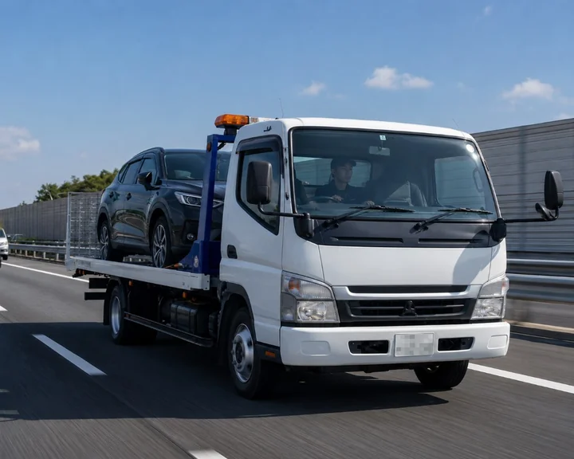
現場で適切に対応し、レッカー搬送から帰宅に必要なレンタカー手配まで、併せて自社工場での点検・修理のご相談も、同じ窓口でつなぐようにサポートします。
最短5分で現場に駆けつけます
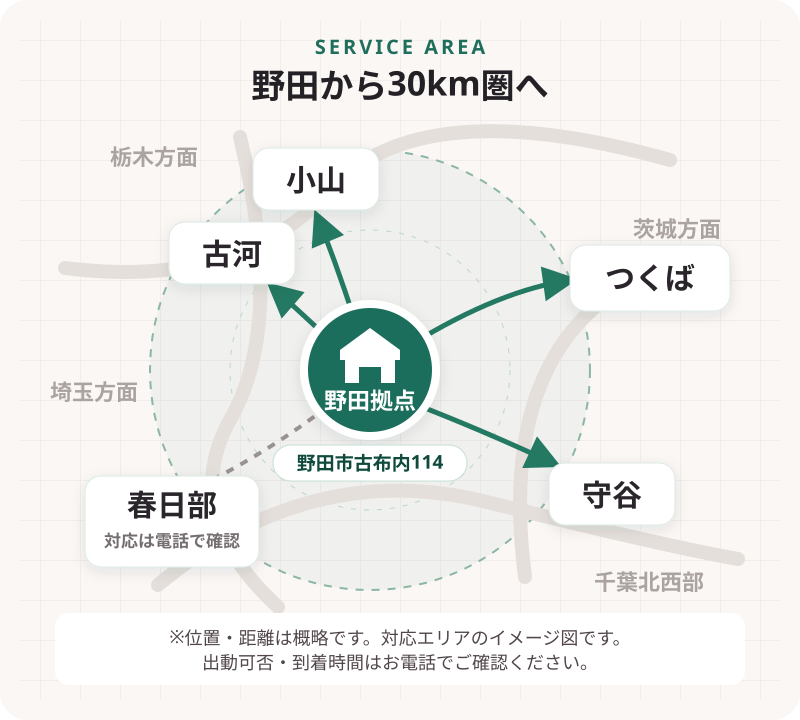
野田市を拠点に、茨城・栃木・埼玉・千葉北西部の現場へスピーディに向かいます。到着までの時間は場所・道路状況により異なります。まずはお電話で現在地をお聞かせください。
SERVICE AREA
拠点：千葉県野田市古布内114
野田・つくば・小山を中心に、周辺地域へ出動します。
※埼玉県内の対応は、お電話でご確認ください。
※出動可否・到着時間は、現在地・道路状況・車両の状況により異なります。
整備士直通でご相談いただけます。
今すぐ電話する お電話はこちらお問い合わせからお渡しまで、次の順で進みます。
電話で場所・車種・症状を伺います。地図のピンが分かると助かります。
お車をレッカーに積載し、搬送先まで運びます。ご帰宅にはレンタカーをご利用いただけるよう、貸し出しの手配をご案内します。
搬送先は基本的に自社工場です。状態を見て、修理の見通しをお伝えします。
修理完了後にご連絡し、内容のご説明とあわせて、お車をお引き渡しします。
万が一の場合でも無事に帰宅できるまで
安心できるサポートをおこなわせていただきます。
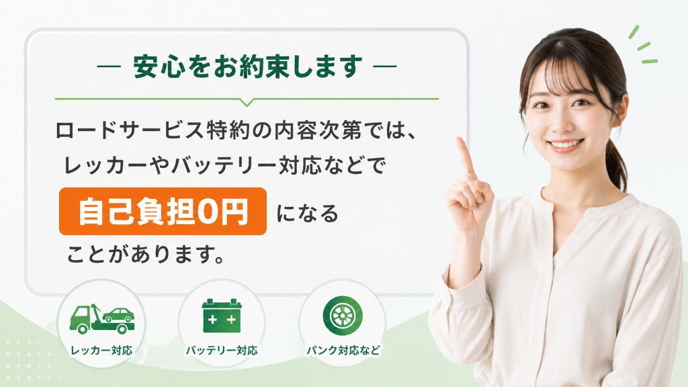
お支払い例（目安）
保険ロードサービス利用の場合
自己負担0円の事例
※お客様の加入保険の範囲内で収まるよう、状況に合わせて最適な手配・提案をします。
※保険内容・距離・時間帯・現場状況により変動します。
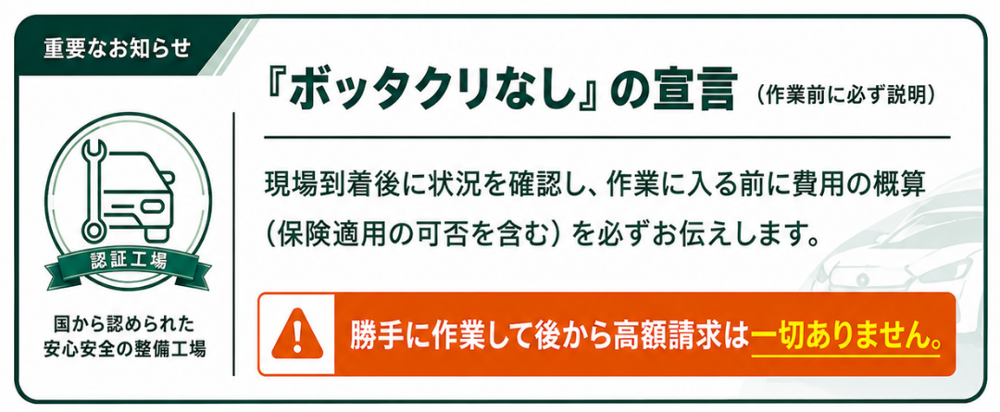
『ボッタクリなし』の宣言（作業前に必ず説明）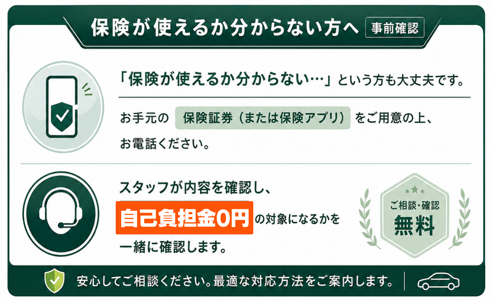
保険が使えるか分からない方への事前確認のご案内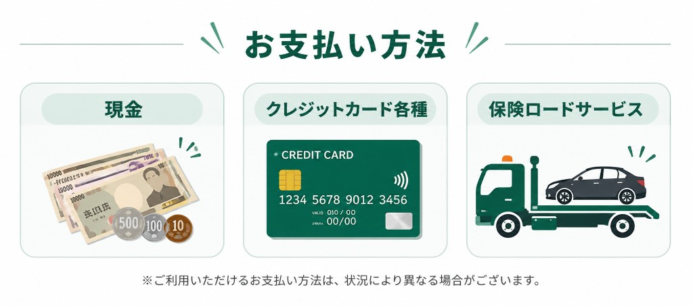
お支払い方法| 項目 | 当社 | 他社 （運搬だけの例） |
|---|---|---|
| 拠点 | ◎野田市拠点 | △遠方の拠点から入ることも多い |
| 夜間の電話 | ◎有人で出られる時間帯を設けている | △受付が自動音声のみのところもある |
| 狭い道 | ◎小型救援車を持っている | ×大型車のみで断られることがある |
| 低車高 | ◎フラット積載で底を擦りにくい | △傾斜板の段差が気になることがある |
| キャンピングカー | ◎大型向け積載の相談可 | ×サイズで断られることがある |
| 搬送のあと | ◎自社工場で点検・修理が続く | ×降ろしたあとは別手配になることが多い |
| 保険の電話 | ◎代わりに出ることもある | △自分で連絡する前提のところもある |
24時間365日ワンストップで安心サポート
24時間受付・整備士直通 お電話はこちら※個人の体験です。状況により対応は異なります。
夜中にエンジンまわりがおかしくて不安でした。電話で「いま向かう」と言ってもらえて助かりました。
保険の電話がよくわかりませんでしたが、こちらで出てもらえたのがありがたかったです。
狭い道だと言われ続けていたので、入れる車が来ただけでホッとしました。
国家資格を持った整備士が対応。野田・つくば・小山のレッカー・ロードサービスは、お電話からお気軽にご相談ください。
※出動・対応可能な時間帯は都度お伝えします。